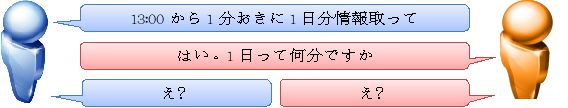
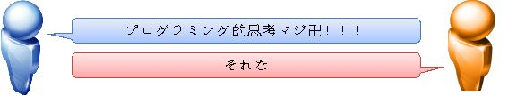

| 「プログラミング教育」ってなにそれおいしいの？ | |
| 内田 賢 | |
| (2018) | |
|
合同会社エレファントアンドキャッスル |
|
「プログラミング教育」ってなにそれおいしいの？ |
|
|
|
|
|
内田 賢 |
|
2018/01/24 |
|
|
目次
1 はじめに
本書は筆者の経験に基づく独断と偏見が混合した内容になっております、予めご了承のほどお願い申し上げます。
プログラミング教育を受ける年代の子供を持つご両親に読んで頂ければ幸いですが、プログラミング教育に関心の強いIT系技術者にも興味を持って頂ければと僭越ながら主観的なことを多く記しました。
筆者は生粋のプログラマーではありませんが、IT系企業の経営者・技術者、また子を持つ父親として、その見地からプログラミング教育について述べています。
現代日本において多様な意見には多様な答えがあります。一辺倒な判断を求めず、ご自身を取り巻く環境やご自身、ご家族の考えを一番に自分たちだけの解をもって物事を判断されるのが最良と思います。
本書がその一端を担うきっかけとなれば幸甚です。
2 また社会に出て役に立たない教育が増えた
因数分解
平方根
元素記号
小論文
我々は日常においてこれらを必要としたことがほとんどありません。
それどころかごく簡単な四則演算すらもスマートフォンなどの身近なデバイスを使って計算させています。
プログラミング教育に触れる前に、我々の身の回りで起きていることを少しおさらいしてみたいと思います。
2.1 学校の教育は無駄だったか
筆者は学校の基礎的な教育が無意味だったと言うつもりは元よりないことを最初にお伝えしたいと思います。
筆者は学習以外の学校という教育の場では、いじめなども盛んな環境にいたこともあり、本能的に学ぶことも多くありました。
しかし、それらについては触れず、ここでは学習としての教育にフォーカスします。
教育によって一定の学力を身に着けさせられる活動は今の筆者を形成する上で必要不可欠なものでした。
今話題に上る「プログラミング教育」とは新設となる教育カリキュラムです。
ダンスの次はコンピュータ、しかも言葉から察するに一筋縄ではいかない印象。
「ダンス」はすぐにイメージ出来ても「プログラミング教育」は全くイメージ出来ません。
それでも早い子供は「プログラミング教室」という習い事を始めており、人気もうなぎ上りです。
筆者には同じ年齢の息子を持つパパ友がおり、彼もまた同じIT業界で働く方でした。
彼は自分の息子を早速「プログラミング教室」に通わせたそうですが、苦笑交じりに首を振りながら「無駄だった」と語りました。
筆者も「プログラミング教室」という場所で教わる内容を全く想像出来ない訳ではありませんでしたが、彼が発した辛辣な意見はもっとずっと多くのことを語っているようで強く印象に残りました。
果たしてプログラミング教室ひいてはプログラミング教育とはどのようなものなのでしょうか。彼に無駄と言わしめたものはなんだったのでしょうか。
ひとことに「無駄」と聞くと、我々はいらないものという印象を持ちますが、筆者は一概に無駄＝いらないものとするオペレーション的な考えでは教育は完結出来ないと考えています。
何を申し上げたいかというと、無駄であるとは思うものの、無駄なことを学ぶことで、無駄だったかどうかを適切に判断する素養が身に付きます。
無駄だと決めつけて子供たちから取り上げることは簡単なのですが、無駄なことを無駄だと思う感覚を身に着けさせる為には、遠回りのようで最も近道であるように思うのです。
学校という場では教室、班、グループなどハイコンテクストなことを連想させるキーワードに溢れています。
男子、女子というキーワードも生徒らが用いると、人類としての男女やあるべき姿の男女を示すのではなく、単にクラスの男子や女子に限っていることがわかります。
学校で教育を受ける生徒たちは教育を受けるという経験を複数名で同時に体験することを基本とすることで、それらが無駄かそうでないかを非常に親しみやすい話題にして話すことが出来ます。
ですが、それが大きなメリットとなるから無駄でも受け入れようというのではどうも乱暴ですね。
もう少し「無駄」というものを深掘りしていきたいと思います。
2.2 社会にある無駄
我々の周りではどうでしょうか。
社会人としての我々はコストカットや省力化、生産性向上などあらゆる場面で無駄を悪として捉え、それに立ち向かっています。
日用品もより安く手に入れる為に、スーパーのチラシを吟味することに余念がない方も多くいることでしょう。
例えば、トヨタ生産方式をルーツにするLEANという考え方には七つのムダをなくすという原則を持ちます。
無駄を排除するという姿勢は多くの場面で間違っていないでしょう。
ですが現実において、我々の周りには無駄が溢れています。一番多い無駄は無駄遣いではないでしょうか。
口寂しいときに食べるチョコレート、リラックスしたい時に吸う煙草、いらいらした時に同僚を誘っていく飲み会。不動のトップは、時間でしょうね。
でも、これらは無駄遣いといえば無駄遣いですが、全部が全部無駄じゃないような気がしませんか。
筆者は人によって必要だと思います。
主観的には煙草やお酒は無用なのですが、チョコレートは大好きですし、日曜の早朝に淹れた熱いインスタントコーヒーと食べる安価な板チョコは格別で病み付きです。
無駄とも思える時間を、コーヒーから立つ湯気をのんびり眺めて過ごす、日常のちょっとした贅沢です。
無駄かどうかは、他人が決めるべき事ではないことを物語っていないでしょうか。
このようなことから筆者は子を持つ父として、最初から無駄だと取り組む姿勢では学びが薄れると考えています。
無駄の中から価値を見出す技能は多くの無駄に触れることで高まるでしょうし、有事の際には無駄を回避した行動がとることも出来るようになるでしょう。
仮に無駄だとしても、無駄を学ぶことは無意味ではありません、「プログラミング教育」が無駄かどうかはそれを学んだ子供たちが判断します。
2.3 役に立たないと消される
国際的にも高い人気を博す国民的マンガに、七つの球を集めて願いを叶えるという冒険活劇があります。
物語が進んでいくと望まれる願いはミクロなものからマクロなものにシフトしていき使途も形骸化しますが、代わりに地球の存亡を賭けた戦いがメインになっていきます。
ある時、地球外生命体が二つ地球に降り立ちます。
地球人と交戦した地球外生命体のうち一つ、母親がでべそだとされる方は戦いに敗れ、髪の毛の逆立ったもう一つの地球外生命体に助けを求めます。
手を差し伸べる地球外生命体は、あろうことか傷付いた方を空中に放り投げこう言います。
直後、閃光を放って一瞬で葬り去ってしまいます。
ナッ...いえ、母親がでべそだとされる地球外生命体はなぜ命を奪われてしまったのでしょうか。
先ほど無駄について理解を深めましたが、彼は無駄だったから排除されてしまったと仮定してみます。
彼はひどく傷つき、戦闘や支配を目論んでやって来たという目的を達成することが困難な状態にありました。
ですが、無駄な存在ではなかったように思われます。
地球人の子供がおもむろに言い放った母親がでべそだという暴露に、母親がでべそだとされる地球外生命体は焦りを隠しきれず取り乱しましたが、もう一人の地球外生命体は声高らかに笑い、明らかに楽しんでいたのです。
戦いに敗北したと言っても、仲間です。それもいい仲間です。
仮に体がゴムのように伸びる果実を食べた海賊の船長の仲間だったなら、「お前はおれの仲間だ！！！」「おれは死んでも助けるぞォオ！！！」と叫ばせたでしょう。
話が脱線しました。
いい仲間に対して、無駄という感情がそう沸き立つものでしょうか。
どうもしっくり来ません。言葉を置き換えて再度検証してみます。
無駄＝不要と断言することになりますが、これは先ほど一概に不要と判断することは不確かであると述べたばかりです。
髪の毛の逆立った地球外生命体は無駄か否かを熟慮する様子も見せていませんし、無駄であることが理由ではないように思われます。
ではなぜ髪の毛の逆立った地球外生命体は仲間を殺してしまったのでしょうか。
髪の毛の逆立った地球外生命体はそこまで考えていなかった、それも考えられなくはないですが、もう一度彼の発言を確認すると、いかがでしょう。
ヒントが隠されていました。
うごけない、とはダンスや球技において体が思うように動かないという意味ではなく、戦闘や支配を行うにあたってのパートナーへ期待する結果を求めることが難しいという状態を示していると考えることが出来ます。
これはつまり、役に立たないと置き換えることが出来ます。

どうでしょう、なかなかどうしてさまになっているのではないでしょうか。
結論としては、髪の毛の逆立った地球外生命体は役に立たないと判断したから母親がでべそだとされる地球外生命体を殺害した、となります。
「無駄」と「役に立たない＝無益」はお察しの通り似て非なるものです。
確かにそう判断されたものは同じ末路を辿る傾向が強いですが。
それにしても、それにしてもです。
なぜ殺したのでしょうか。無益だからと言って殺す必要はあったのでしょうか。
生かしておけば徐々に回復し、また役に立つ状態に復帰できたかも知れません。
幸いなことに、彼らが使用した小型宇宙船には生命維持装置という瀕死の状態においても生命を長らえさせることの出来る機能が備わっている為、それは可能でした。
事情を説明し同情を求めれば、地球人も承諾してくれたことでしょう。彼らは彼らで宇宙規模での絶滅危惧種なのです。
再度、なぜ彼は仲間の命を絶ったのでしょうか。
彼は明確な答えを言っていました。
それは「うごけない」の次の「○○人」にあったのです。
この○○にはサイヤが入ります。
彼は○○人という部族に対して大変高い誇りを持っています。それもそのはず、彼はその部族の王子なのです。
母親がでべそだとされる地球外生命体は、部族の尊厳として役に立たないと判断しうる、致命的な過ちを犯したのです。
いえ、この場合もっと感情的な言葉が似合います。彼は王子の眼前で、あろうことか部族代表としての醜態を無様に晒してしまったのです。
地球に降り立ってすぐ、高価値であるとされる地球に対する派手な挨拶として、周辺の町を爆発させて吹き飛ばしてしまった母親がでべそだとされる地球外生命体を「これぐらいにしておくんだな」と優しく窘める一方、「俺のいうことがきけんのかー！！！！！！」と怒ったりすることもあったけれど、ずっと戦友として時を共にした仲間で「遊びにいってやろうぜ！」と遊びにも誘うほどに二つは親しい仲だったのです。
多少の気の緩みはあったにしてもきちんと真面目に仕事した。だが、結局のところ部族の誇りを汚し役に立たない状況に陥った部下以上友達未満の母親がでべそだとされる地球外生命体。
回復出来る技術とそれを使用する方法を知っていながらそうしなかったのには、親しみを覚えていた存在の重みが落差を広げ、一種の懲らしめの念が込められてしまった為ではないでしょうか。
こうして王子である髪の毛の逆立った地球外生命体は王子さながらに素早く決断し、懲罰的な意味を込めて仲間を消したのです。
余談ですが、この行動は読者を含む地球人たちに大きなインパクトを与え、髪の毛の逆立った地球外生命体というものが無慈悲で強力な存在であることをアピールしました。
つまり、あの短い叫びには次のような意味が含まれていたことになります。
我々の世界でもオリンピックなどで期待する活躍がまるで出来なかった選手は、健闘を称えることはされず、世論はよろしく迎えません。
居た堪れなくなった選手は競技をやめてしまったりもします。そのようなことに対して我々は、事実を知らないばかりか、知ったとしてもそうさせるきっかけを作ったことに無関心でいます。
慈しみも労いもあったものではありません。我々もまたベジータと同じように、役に立たない存在と感じたものは感情を伴わせることで消しているのです。
それには無慈悲で強力な潮流を感じざるを得ません。
抽象的な表現、誤謬、詭弁が含まれる為、鵜呑みにされないようご注意頂きたいのですが、何を言わんとしているか大体伝わったかと思います。
内容があまり入ってこなかった、そんな意見も聞こえてきそうですが、それほど強く論じたいことではありませんので、何となくわかって頂ければ十分です。
本題に戻りましょう。
今、我々は無駄と無益なものを正しく判別できる状態にあります。
これを学習に照らし合わせるとどうでしょうか。
無駄と言い切れるものは少ないですが、無益と言い切れるものは意外とあります。
少なくとも筆者は仕事上、三角関数を使用する場面に出会ったことがありませんので無益でした。
しかし例えばべき乗は多用しますので、有益でした。
これらは詰まる所、職業や分野における専門性の度合いによって携わる確率が大きく変動するのです。
学校教育で一日が1440分だったり86400秒であることは主立って教えることはありませんが、教えてくれていれば情報処理の現場ではもう少しスムーズなコミュニケーションが行われていたかも知れません。

このように学校の教育では有益と無益がしばしば間違えられています。
コラム-日常で用いられる三角関数
趣味のキャンプで、ある広さに区分けされた区画サイトを利用した際、テントとタープを効率よく配置するにはどうしたらよいか考えたことがありましたが、そこで三角関数を使用することになりました。
ですが筆者の計算力はからっきし。まったく自信がなかったので入力した値の結果を返してくれるWebサイトを使用しました。
有益と言えるほどの結果を生んだわけではないので、依然三角関数は筆者にとって無益ですが、知らなければ利用しようとも思えなかったでしょうし、無駄ではなかったと言えます。
3 プログラミング教育
ようやく本題に入ります。
そもそもプログラミング教育とは、2020年を節目とする政府の成長戦略の一環として「小学校段階における論理的思考力や創造性、問題解決能力等の育成とプログラミング教育に関する有識者会議」にて議論され、「小学校段階におけるプログラミング教育の在り方について（議論の取りまとめ）」としてまとめられた文書で語られているものです。一言でいうと「プログラミング的思考を身に着けるべく小学校から教育を開始しよう」というものです。
ではプログラミング的思考とは何を示すのでしょうか。

3.1 プログラミング的思考とは
バズワードです。
バズワードとは何となくわかるけどぼんやりして実体がないような曖昧な定義の言葉で、「プログラミング的思考」という固定の意味は本書出版時点で定着していないと筆者は捉えています。
世の中で関心が高まり、言葉が独り歩きして、いつの間にかある特定の物事や状態を示すようになるにはもう少し時間を要するでしょう。
それを踏まえて「プログラミング」の言葉の意味をGoogleに問うと、「計画の立案。特に、コンピュータのプログラムを作る仕事。」と返ってきます。
ですが、これは広義である為、これをそのまま適用するのは混乱の元です。
ムム。
いやいやおかしくありませんか。
そもそもプログラミング的思考という言葉は「プログラミング」以外に「的」という～のようなという意味を持つ語と「思考」という考えや考え方を示す単語で成り立っています。
「プログラミング」という言葉の意味さえ正しく理解出来れば広義であれ狭義であれ、おおよその意味を捉えることは出来るはずなのに、「プログラミング」という言葉を調べた結果が混乱を招くなんて。
その通りです。何も不思議ではなく、おかしいのです。
ここに入る語として「プログラミング」という言葉で言い得ているものを表現しなければならないのに使っている。
というよりも使ってしまった、というのが正しいかも知れません。
IoT（アイオーティー）という言葉をご存知でしょうか、FinTech（フィンテック）という言葉をご存知でしょうか。
それぞれ噛み砕くと、Internet of Things、フィン＝ファイナンシャル＝金融。そしてテック＝テクノロジー＝技術。
和訳すると、モノのインターネット、金融技術となります。
まるで意味がわかりませんが、今やその言葉はそれなりにしっかりした定義をもってIT業界を飛び交っています。
これらは前述のように独り歩きし、帰納的な消去法の連続でその意味が洗練されて行きました。
話を戻します。
先に述べたようにプログラミングという言葉は適切にはまらないようですが、それでは何だったらはまるのでしょうか。
恐らく、何も考えずにプログラミングという言葉が用いられた訳ではないと思います。有識者と自他共に認める方たちが多用した言葉ですから、彼らなりのプログラミングというものが示す空間はその会議においてはある程度の共通したアイデアであったはずです。
それはきっと広義のプログラミングという言葉が示す意味からさほど遠くない、あるいは連想可能な定義であったに違いありません。
では、同じようにプログラミングという言葉を自分の理解で考えるといかがでしょう。
プログラミングはプログラマーという職業の人がする仕事、というイメージが一般的ではないでしょうか。
プログラマーはアプリケーションをプログラミングする、という状況をイメージすると、この場合のプログラミングはもう少し決まりのよい言い方をすると「コーディング」ということになります。
コーディングとは、ソースコードと呼ばれるコンピュータを操作する為の命令文を記述する具体的な作業のことです。
このようにコーディングを行うことをプログラミングと呼んで「プログラミング的思考」というのでしょうか。
いいえ、恐らく異なります。
「小学校段階におけるプログラミング教育の在り方について（議論の取りまとめ）」をいくつか抜粋します。
「複雑な文脈の中から読み解いた情報を基に論理的・創造的に考え、解決すべき課題や解決の方向性を自ら見いだし、多様な他者と協働して新たな価値を創造していくための力が求められる。」
「子供たちが、情報技術を効果的に活用しながら、論理的・創造的に思考し課題を発見・解決していくため」
「自分が意図する一連の活動を実現するために、どのような動きの組合せが必要であり、一つ一つの動きに対応した記号を、どのように組み合わせたらいいのか、記号の組合せをどのように改善していけば、より意図した活動に近づくのか、といったことを論理的に考えていく力が必要になる。」
文脈より以上のような部分が「プログラミング的思考」を示していると思いますが、どこにもコーディングの要素はありません。
三つ目の文章をより細かく砕いたらその要素が現れてくるかも知れませんが、要するにあまりはっきり述べてられていないのです。
筆者が捉えた素直な感覚では、以下のようになります。
まず、論理的思考を身に着けることが先決なのだが、子供たちが課題を論理的に正しく捉えて適切な対処を行う際にコンピュータ（PCやタブレットなどスマートデバイスなど多岐を示します）を用いる場合、生活や人生を豊かにするものとなるように工夫すること。ちなみに考えるまでで、実行はしない。
これでもまだまだ分かりにくいですね。
例えば、月までの距離って何kmなんだろう？という漠然とした疑問を持った小学生がいたとします。
お父さんに聞いたけども、「ggr（ネットを使って自分で調べてごらんよ）」と言われたとします。
その時に子供がどういう行動を取るか。「プログラミング的思考」を用いるのです。
小学校低学年レベルでもコンピュータを使用すると以下のようなことが出来るようです。
この中でどんな方法を取ることが適切でしょうか。
「プログラミング的思考」は論理的・創造的に考えることを前提にします。
祖母は不在かも知れないし、何となく知っていなさそう。
ネットを使って人に聞くのは騙されたりするかも知れないし、もっとずっとよくないことに繋がりそう。ちなみにメッセージアプリ程度ならば両親の操作を見て知っているので扱えるんだけど。
他の人にスマートデバイスを渡すのは盗難の恐れもあるし、自分が知りたいことを他の人に調べてもらうのってなんとなくよくなさそう。
模範解答は検索サイトなりで「月までの距離」と検索することです。
するとあっさり「384,400 km」と出てきます。
ここで子供の探究心に火が付いたとします。
路線バスだったらどれくらいの時間がかかるんだろう、その為にガソリンはどのくらい必要なんだろう。
バスはどのくらいのスピードで走っているんだろう。どうしたらそのスピードがわかるだろう。
さすがに小学校低学年に燃費という考え方は難しいと思いますが、この辺りまでが「プログラミング的思考」です。
答えを導き出すことが目的ではないのです。
ですが、低学年にしては十分なやり方で課題にアプローチしたと言えるのではないでしょうか。
参考に、答えは以下となります。
384,400 km / 時速30 km ＝ 12813.33時間
384,400 km / 路線バス燃費 4km/L ＝ 96100リットル
しかし残念ながら、そこから導出される答えは誤っています。
宇宙を路線バスが走れるはずはないので、月までと同じ距離の、出来れば起伏のない直線を地球上で用意し、路線バスで走行した場合の結果を求めたこととなり、前提が誤っていることになります。
燃費も天候や湿度で変化がありますので、精度のほどは推して知るより他ありませんし、384,400kmや、30km、4km/Lという情報ソースが、この場合の計算に用いる蓋然性に足るものであるかも不明です。
コラム-月までの距離
もはやこの程度の情報は情報ではないのかも知れません。同じような値を問われた際に、脊髄反射で答えるには相応の記憶力と応用力が必要ですが、10数秒の猶予を与えられれば方法を同じくして誰もが同じ答えに辿り着くことが出来ます。
このようなパターン化は「プログラミング教育」を簡単にするコツになり得るかも知れませんが、同じ方法で同じ情報ソースを参照したからと言ってその値が正しさを増すわけではないことを認識しておくべきです。
例えばWikipediaの情報が必ず正しいとは限りません。より正しい答えに近づく為にはその値がどのような理由で正しいと考えることが出来るかを表現できるようにしておくことではないでしょうか。
3.2 プログラミング的思考でないものとは
混乱させるようですが、逆にプログラミング的思考でないものについても考えておきたいと思います。
単純に逆の表現をすると、論理的でなく、創造的でない考え方でコンピュータの類を使用せず課題に向かうことと言えるでしょう。
小学校低学年の子供がパイレーツオブカリビアンのテーマ曲「俺は海賊」を聴いて、自分でも演奏してみたくなったとします。
コンピュータを使用し、楽譜を得る為にネットショップを活用したり、ピアノを演奏している動画を見て弾き方を盗んだりするのが、「プログラミング的思考」寄りの解決方向だと思います。
ですが実際の子供は驚くべき行動に出ます。
パイレーツオブカリビアンのテーマ曲「彼こそが海賊」を聴いたその瞬間のインパクトだけを頼りに耳コピするのです。
ああでもこうでもないと試行錯誤を繰り返す後、やがてそれっぽく聞こえるメロディを聞かせてくれます。
それを友達に教えて広まり、より多くの子供たちが曲を楽しんで弾けるようになっていきます。
演奏の完成度として、良くはないでしょう。未成熟な子供の技能では耳コピにも限界があります。
ピッチやリズムもずれていることが容易に想像出来ますし、友達同士の伝達も正しく行われるかはわかりません。
ですが、大人として、親として、とても褒めてあげたい衝動に駆られませんか。それも「プログラミング的思考」がもたらす結果よりもずっと強く尊い気持ちで。
ご察しの通り、一部脚色しましたがこれは実際に筆者の周囲で起きたことなのです。
もちろん論理的な観点で、同じ結果に達することはあったでしょう。
自分が耳コピの技能を身に着け演奏するのが最も適切であると答えを出し、耳コピの技能を習得する為の方法を探して...。
いつかはわかりませんが、なんだか実現には時間を要しそうな印象を覚えますね。
左脳と右脳はしばしば論理と感情を表現する比喩として使われてきましたが、それに倣えば、論理的な左脳で行われる思考は多くの場面で間違いを修正し、結果を適正なものへ近づけてくれます。
ですが、本件のような右脳で行われた思考から始まった一連の活動（小さなムーブメント）はとても素敵で創造力に富んだものでした。
どちらの場合でも、小学校低学年の子供の思考では正しい結果など期待出来ようはずがありません。
誤解頂きたくないのは「じゃあどちらがいいのか」の答えを導くのではなく、「じゃあどちらも大事である」と認識することです。
いろいろな課題にわざわざコンピュータをいちいち用いる必要はないのです。
そもそもコンピュータの使い方も熟知していないのですし、うまく利用できるはずがありません。
コンピュータは道具なので、使うべき時、使ったら便利な時にこそ使えばいいのです。
その時の為に、使い方や考え方は知っておいた方がいいでしょうね、
「プログラミング的思考」が実際に我が子らにアプローチするとしたらその辺りに留まるのがよいのではないでしょうか。
案ずるより産むが易しという先人の残した教えもありますから。
3.3 実際のプログラミング教育
さて、現実にプログラミング教育を施す習い事が増えていることは本書の冒頭で述べました。
その内容はどんなものでしょう、そういうものに大変興味があるから本書を開くきっかけになった方もいるでしょう。
生業がIT関係でない親御様は特に価値を判断するのが難しいのではないでしょうか。
例えばですが、そのような教室では実践の手始めとして、PC上の画面にある猫を左クリックしたらニャーと鳴く、というプログラムを作成する練習を行ったりします。
そしてこれらは「Scratch」などのWebサイトやアプリでも体験することが出来る内容です。
代表として「Scratch」を取り上げますが、これは子供の為のコーディング学習の入門的プロジェクトとして、たくさんのチュートリアルを使ってコーディングの「さわり」を体験することが出来ます。
模倣と反復は学習の基礎と言いますが、チュートリアルに倣って自分でカスタマイズしてみる、それを別の方法でもやってみる、など追加負担なしにWebサイトやスマートフォンのアプリをダウンロードするだけで利用することが出来ます。
PC版と同等の機能を有し、スマートフォンやタブレットでも利用可能なScratch3.0は本書執筆時点で未リリースです。
現時点ではScratchjr（スクラッチジュニア）がその代替として有用です。
しかし教育の現場という独特な環境で行われる「プログラミング教育」はもっと「手前」から始められるようです。
例えばアンプラグドという手法を用いて学習を行うとありますが、なんということはありません。ネットワークに接続されたPCやデバイスを使用出来ない、いわゆるオンラインではない学習環境にてカードなどを用いて行われるカリキュラムとのことを示すのです。
確かに現在でもコンピュータやネット環境が万全という教育環境は多くありませんので、従来の様な座学で行える教育方法が必要になることは否めないでしょう。
この教育方法はニュージーランドで開発された「コンピュータサイエンスアンプラグド」というものに根差しているそうです。
ただ、ここに筆者は疑問を持ちました。声低に述べます。
ですが、往々にして疑問とは解決されないものです。
邪推しても物事は進展しません。何かやんごとなき理由があったとして先に進みます。
改めて、猫がニャーと鳴くプログラムを学ぶことについてですが、前述のようなプログラミング教育の現場をイメージしてみると、論理的思考を学ぶ為に思考を一時停止する必要があるように思われます。
なぜそこに猫がおり、左クリックをした時だけ、ニャーと鳴くのだ？という一般的な疑問に対してです。
論理的思考と呼ばれる考え方の基本的な例題は以下のようなものです。
置き換えると太陽が沈むと夜になる、夜になると暗くなる。
すなわち、太陽が沈むと暗くなる、というものです。
少し雑かも知れませんが小学生が学ぶ論理的思考として、スズメは鳥、鳥は飛べる、スズメは飛べるという演繹の練習はよいでしょう。
子供のことですから、「お母さんは女」「お母さんは怖い」ということで「女は怖い」などと言うかも知れません。これは誤りです。
しかし練習中の身なのですから、誤りは時間を掛けて修正すればよいのです。
それにしても子供って、時々ある意味の的を射ますよね。
本題に戻りますが、これは学校教育でもよく見られる教育優先の思考停止です。
筆者の育った環境の影響が強いのかも知れませんが、どういう訳か学校という教育の現場にはどことなく論理性が欠如されている感を払拭出来ません。
例えば、ある漢字の問題を学習させたいが為に変な例文になる、無茶な設定で算数の問題を出題する為に答えが現実と乖離するなどといった事象です。
Aと書かれた箱に20個のリンゴが入っています。Bと書かれた箱には100個のリンゴが入っています。AとBの箱のリンゴを合わせると何個になるでしょうか。
答えは120個ですね。
ですがこう考えるとどうでしょう。Bの箱に入っている100個のリンゴの上にAの箱にある20個のリンゴは適当に散らばせればすべて乗りますが、Aの箱にある20個のリンゴの上に100個は恐らく乗りません。
箱という概念が与えられ、それを「合わせる」と記述されたことによって二つの箱にあるリンゴは片側に寄せられるイメージを持った方は読者の中におられたでしょうか。
この箱の大きさについては言及されていませんので、最初に20という小さな値で箱を示しているので容量の誤解が生じます。
箱をイメージしてしまうことによって先に出てきた20個容量の箱には追加で100個は入らないと思考が邪魔をしてしまうのです。
現実で考えた時にそれはあながち間違った感覚ではありません。
リンゴが120個欲しくてスーパーに行った主婦が20個の箱に100個乗せて買っていくでしょうか。
100個の箱に20個のリンゴを載せて買っていきますよね。
というか120個もリンゴが欲しいなら配送してもらいますよね。
それにしてもリンゴ120個も何に使うんです？
なぜこんな揚げ足を取るような理論で単純な足し算の解が円滑に求められないのでしょう。
理由は単純です。
無味乾燥な文章題に彩りを与え、現実で考えたらどうかと「論理的」かつ「創造的」に問題と向き合った為です。
このように論理的で創造的な思考が従来型の教育に水を差すのは珍しいことではありません。
そのような「おもしろ」はWeb上にたくさん転がっていることからも明らかです。
筆者の実体験ですが、漢字の小テストで先生が読み上げた言葉や文章をそのまま記述するというものがありました。
「電話はテレホン」と読み上げた先生でしたが、その答えあわせの際、先生はこう主張しました。
「テレホン」と聞こえたかもしれないが、正しい解釈は「テレフォン」なのだ。
え？そこ？と、ざわつく教室を余所に、先生はクラスの99%を不正解とすることで我々生徒の慢心を戒め、世の中の厳しさを教えてくれました。
漢字の能力を試す内容であったとしても、付帯して発音されたカタカナ英語に英語発音的に正しい解釈が求められている場面があるのです。
しかしながら「電話はテレホン」という問題、じわじわ来ませんか。
それはそれとして、「論理的」で「創造的」な思考が従来型の教育に水を差すというのはどこか引っ掛かります。
これらは先に述べられた「プログラミング的思考」を構成する言葉であったことを覚えていますでしょうか。
「プログラミング教育」は「プログラミング的思考」と相反するものだとしたら矛盾を生じる可能性が高い、由々しき事態です。
コラム - プログラミング教育ってこういうこと？
「Scratch」のWebサイトには以下のような記述があります。
「Scratchは、若者たちが、クリエイティブに考え、体系的に判断し、協調して活動することを学ぶための手助けをします。これらは、21世紀を生きるために欠かすことのできないスキルです。」
有識者のみなさんが表現したかった事って単純にこう言うことだったのかも知れないと筆者は思いましたが、どなたか絵に描いて説明頂きたいものですね。
3.4 エジソンに学ぶ
では猫がニャーと鳴く「プログラミング教育」は本当に「プログラミング的思考」と相反するものなのでしょうか。
必要は発明の母と言います。
余談ですが、この言葉はエジソンのものではなく、イギリスの小説家、ジョナサン・スウィフトが著書「ガリバー旅行記」で用いたというのが定説であるようです。
ですが、筆者がこの言葉を学んだきっかけはエジソンという存在が不可欠でしたので敢えてエジソンにも、これからはジョナサン・スウィフトにも感謝の念をもって引用しようと思うことを宣言して余談を終えます。
PCのディスプレイに表示されている猫を左クリックした時にニャーと鳴く、それだけでは何の修行かよく分かりません。
しかし猫がニャーと鳴いた結果、何らかの目的が達成されたとしたらそれは論理的で創造的だったと呼べるものにならないでしょうか。
試しに、親切なのだがどうにも反りの合わない、猫嫌いの親戚が居たとしましょう。
その方が好意で来訪してくれるのを無下に断ることが出来ず、毎度気まずい思いをしている主婦（38）。
ある時息子（10）が授業で、スマートフォンの画面上の猫をタップするとニャーと鳴くコードをScratchで記述したと話してくれました。
使い方を説明された主婦（38）は早速使ってみることにします。ほどなくして親戚の来訪があり、インターホンで受け答えをしていると、おもむろにニャーという鳴き声。
親戚ははっとして嫌悪感のある声を漏らすと、その日の来訪は諦めて帰っていきました。
もちろんそれは息子（10）が作ったコードが可能としたことです。
息子（10）は母である主婦（38）の為に、やさしい嘘を付くアプリを発明しました。
この後主婦（38）はそれに頼ってばかりではいけないと考え、親戚の来訪を快く受け入れられるよう前向きに考えるようになった...かも知れません。
息子（10）はこのほっこり話を友人（9）に話しました。
友人（9）は友人の母（31）にその手の来客はなかったのですが、そのような事態に備えて同じようなコードを記述し、少しだけ改良をしました。
改良点はニャーとしか鳴かなかったところを、犬や赤ちゃんの泣き声も鳴らすことが出来るようにしたところです。
専業主婦の友人の母（31）はある時、たまたま酷く疲れて帰り、重い足取りで化粧を落としに洗面所に向かいました。
メイク落としで目元をクレンジングしていると不意にインターホンが。
友人の母（31）がインターホンにて応対すると宅配便の業者であることが分かりました。
今のままで人に会うのは恥ずかしいと考えた友人の母（31）は友人（9）が作ったコードを思い出すと、何とかならないかと赤ちゃんの泣き声を鳴らしました。
すると宅配便の業者は、赤ちゃんがぐずっているならば、と周辺でいくつか宅配があるので最後にもう一度回ってくれると話してくれました。
かくして無事に目元を洗い終えマスクをした友人の母（31）は、十数分後、宅配便を受け取ることが出来ました。
しかし実際のところ、地域密着型の宅配業者は日頃から配送をしているので友人の母（31）宅には赤ちゃんがいないことを知っており、場を察した粋な判断だった...のかも知れません。
いかがでしょうか、何となくただ猫がニャーと鳴くコードを記述する目的が生まれ、その後の発展性も見えたような気がしませんか。
恐ろしいこじつけを感じた方もそうでない方も、要は、例が示したように目的が存在した方が論理的で創造性を発揮しやすい、と感じられたのではないでしょうか。
これならば面白いぞ、やってみようと子供たちが思ってくれればいいのです。
効率や生産性が重視されるのはまだまだ先のことですから。
ただ、教育の現場においては何事にもこのような意味を持たせた活動というのは難しいのでしょう。
教育とはまったくもって単純ではありません。現場の教育者たちも三十人三十様の生徒にベストな方法で対処出来る訳ではありません。
具体的な対価を支払う私立ならまだしも、無償化されている公立の学校教育にサービスの質を求めることも過剰だと言えるでしょう。
それに彼らもまた、我々と同じく無駄を排除して成果を上げるよう求められていることでしょうから、ある程度の前提条件は個々の想像力で補完されなければ立ち行かないでしょう。
その想像力はどのようにして身につければいいのでしょうか。
そしてそんなうまい話があるのでしょうか。
4 プログラミング教育に向けて
前章では「プログラミング教育」が「プログラミング的思考」を身に着ける為のものであることを述べました。
また、その「プログラミング的思考」を紐解くと「論理的思考」や「創造性」が求められていることについても言及しました。
ただし、それらが我々の理解し得ない範囲に及ぶかというと、恐らくそうはなりません。
また、「プログラミング教育」の目指すゴールも子供に課せられるものとして、高いハードルが設定されることはなかろうと考えられますので、過度の準備は不要と筆者は考えます。
ここでは適度に家庭でも気軽に始められる準備について述べた上で、いったん本書を締め括ります
筆者は前章の結びで「想像力」が「論理的思考」の学習に不可欠と述べました。まずは、その続きから始めたいと思います。
4.1 子供たちの想像力は何で育つのか
筆者の体験を述べます。
筆者の中・高生の時代はプレイステーションが大変人気でどこの家庭でもゲームを楽しんでいました。
筆者は当時いろいろなパーツを組み合わせてロボットを構成して戦ったり、特殊能力を組み合わせて敵を倒すゲームが好きで文字通りハマっていました。
そんな折、カルネージハートというアートディンク社が制作したゲームの発売を同級生の友人に教えられます。
そのゲームはあらゆるパーツを自在に組み立て、その動きさえも自分でプログラミング（この場合コーディングとしてのプログラミングが近い）して戦わせるものだというのです。
発売されると筆者と友人はすぐに手に入れ、相手より早く敵を見つけ、素早く攻撃し、大量に撃破する為の回路を考えました。
我々は互いのアイデアを持ち寄って見せ合って互いに切磋琢磨して自身のプログラムを進化させていきました。
しかしどうにも索敵については、友人の方が上手であり、筆者は後手に回っていました。
ほどなくして筆者は、自分には万能なロボットは作れない、と方向転換し、目的別にたくさんのコンセプトでロボットを作りました。
中にはネタ的に作った、廃案同然で不格好と呼ぶに相応しいロボットも数機おりました。
発売から少し経ち、勝手も随分と飲み込めて来た頃、筆者は汎用的な二足歩行のロボットで友人と対決し勝利を得たいと入れ込んで、対戦を申し込みました。
放課後鼻息荒く友人宅を訪ねると、我々は操作出来ないそのロボット同士の戦いを、固唾をのんで見守りました。
結果は筆者の惨敗でした。
友人の汎用ロボットは強く、筆者の汎用ロボットでは何度やってもまるで歯が立ちませんでした。
幾度も敗北を味わった後、友人は筆者が作ったロボット軍団をひとつひとつ撃破していくことを提案してきました。最も自信のあった汎用的な二足歩行ロボットが通用しない時点で他のロボットなどクズ鉄に過ぎず時間の無駄でしかなかったのですが、既に心がポッキリ折れていた筆者は、これを無意識に承諾していました。
一機、また一機と筆者のクズ鉄軍団が撃破され、筆者がどんよりして惨めな気持ちに落ち込んでいくのと同じ頃、喜ぶばかりの友人の喜び様にも自粛の念が見え隠れし始めます。
と、それは突然起きたのです。
筆者が戯れに作った、人と戦車が合体したような、でもガンタンクのようなかっこよさは微塵もない、汚い恐竜戦車とでも言うべき腐れロボットが圧倒的な強さで友人の汎用ロボットを撃破したのです。
汚い恐竜戦車は索敵に致命的な欠陥があり、敵がいようがいまいがやたら滅法に攻撃したのですが、スマートに動作しようとする友人の機体を次々と撃破しました。
友人の機体が索敵中、旋回中、攻撃の出掛かりなど「そこは攻撃しないで欲しい」紳士的なポイントを、汚い恐竜戦車はまるで空気を読まない猛攻で寄せ付けず手も足も出させません。
友人は何度何度も挑みましたが、結果は一緒でした。友人の機体では筆者の汚い恐竜戦車に勝つことは出来なかったのです。
やがて口数も減り、我々はどちらともなく電源スイッチにそっと手を伸ばしました。
ですが我々は燃えていました。友人はあんな汚い恐竜戦車に負けたことなど認めない、次こそ勝利するとばかりに新型の開発に着手しました。
筆者もあんな汚い恐竜戦車で勝ったことなどむしろ屈辱に値する、作りこんだ汎用ロボットで勝利をもぎ取って見せると息巻きました。
そうして少しの時間を経て再び会いまみえた友人の開発機体の中には、うす汚い恐竜戦車のようなロボットがおりました。
筆者もまたロボットの索敵回路に、友人から盗み得たものをばれない様に工夫を凝らして取り込んでおりました。
お読み頂けて分かる通り筆者にとっては、汚い恐竜戦車が生み出した不本意な結果の先にこそ「想像力」はありました。
ひょっとするとそれ以前からもそういう体験はあったのかも知れませんが、こんなにも熱を帯びて真剣にゲームに打ち込んでいるのを自覚したのは初めてのことだったと思います。
これは筆者にとって大切な原点です。
4.2 創造と想像
前項で想像力という言葉を用いましたが、これは「プログラミング的思考」の要素でも使用されている「創造」という言葉とは何が違うのでしょうか。
日本語的な響きこそ同じですが創造はクリエイション、想像はイマジネーションです。
我々は普通、新しいものを作り出すことを創造と呼び、知識や経験などを元に心の中に思い描くことを想像と呼びます。
更に論理的思考を学ぶ上で、漠然と条件や例題を補足する為に想像力が必要とも前述しました。
その想像力は、実体験の他、音楽、映画などの芸術から刺激を受けることでも得ることが出来ますが、ゲームや読書からも得ることが出来ます。
音楽や映画は基本的に受動的な体験で、聴くまたは観ることで想像性が刺激されます。
ただし、音楽や映画から何かを感じ取ることについては感受性が豊かである、という言葉でしばしば表現されるように、少しの技能が必要となるようです。
読書は「読む」という能動的な行為を続けないと物語が進まないので、前述のものよりは想像性に刺激を与えてくれるでしょう。
しかしありがちなことですが、字面だけを読んでいてはそううまくいきません。
他に想像力を得るよい方法はないでしょうか。
いっそのこと、友達とバンドを組んで演奏する、動画製作スタッフの一員となって作品を作る、物語を執筆するといった具体的な体験をすることは極めて能動的でより想像性を刺激されやすいと思いますが、どうでしょうか。
それはきっと正しいでしょうが、その境地に至るまでにある程度の努力や投資を余儀なくされ、一言で述べて簡単ではありません。
無論、音楽も映画も執筆も絵画も自分が創造したいと思えば、何人も手出しは出来ません。心の中に沸き立つ思いを制限することなど自分以外に出来はしないのですから。
そのような創作活動を制限する権利は学校にも家庭にもありはしませんし、それどころか応援してくれる大人や環境もたくさん存在しています。
それでも創作活動が子供自らの意思で実際に行われている、と聞き及んだところで、我々は「大変珍しいと思う」のが正直なところです。
筆者は想像の先に創造があると考えています。無論「創造」を仕事にするクリエイター職の方にとって方程式はこれだけではないと思いますが、多くの子供たちにも達しえる解として、大きく誤ってはいないと思います。
想像力のまだ乏しい子供が創造的なことをやろうすると何が起こるかを具体的にイメージしてみてください。
恐らく、ほとんど何も起こらないのです。
いきなりでも子供に楽器を持たせれば演奏できるでしょうか、紙とペンを持たせれば小説が出来るでしょうか。
そのような結果が易々と出ないことを我々は経験や知識に基づいて想像出来るのです。
そして、出ないだけならまだしも、創造的な作業を任されることは人によって、大変な苦痛にもなり得ます。
仮に創作をやってみたいと思っても、出来ないまたはやっていない、という漠然とした理由が子供の心にあることもまた、否めないものです。
このように「想像力」は「プログラミング的思考」に必要な「論理的思考」と「創造性」の二つに作用する大きな鍵と筆者は考えています。
やってみたいし、出来るし、何ならもうやってるし。
そんな風に想像力を養い伸ばしてくれるものなんて、この世の中に...ありました。
ゲームです。
4.3 想像力とゲームと私
ゲームは賛否両論ありますが、子供の普遍的な興味関心の中心となって久しいと言えるでしょう。
ゲームと言っても様々です。昨今ではボードゲームやカードゲームも手が込んでいて面白いゲームが多数存在します。
ここでは特に家庭で遊ばれる携帯、据え置き型、スマートデバイスのアプリで提供されるゲームの類を中心に話を進めます。
既にゲームは単純に悪しき存在でないことは世間、世界が証明しています。
ゲームは大きな市場を持ち、プロフェッショナルとして活動する職業ゲーマーも存在し、昨今行われる大会ではeスポーツと位置付けられ、正式な競技として世界的に認められつつあります。
オリンピックに競技として数えられる日もそう遠くはないでしょう。
国を背負ってゲームで戦う選手の姿に子供たちが釘付けになる様子が目に浮かびます。
ゲームと共に育ってきた世代の筆者から見ればそれは大変なブレイクスルーです。
中毒や学業不振、暴力的な描写から得た悪しき学びを実際に起こす問題行動などに繋がり得るマイナス面もありますので、自律の教育無くして決して語ることは出来ませんが、筆者は慣れ親しんだゲームがそのような存在に変わることを喜ばしく思っています。
筆者は、筆者自身がそうであったように、ゲームをベースに学びを得る体験を子供に勧めています。
中にはゲームそのものにあまり親しんでいない方もおられるかと思いますが、
読者の多くはゲームで感動した、楽しかった、残念だったさまざまな記憶があろうと思います。
久しく忘れていた自分自身の興味を改めて呼び起こし、ゲームが好きだった自分を思い出して子供と一緒にそれを楽しむ。
しかしあざとくも教育の面を持たせて、遊んでいるように楽しみながら学ぶという方法を取ることで、単なる遊びに終わらせず、今一つ要領を得ない「プログラミング教育」というものも包括してしまうことが出来ます。
読者ご自身がゲームのプレイヤーとなり、子供の「先輩」となって先を示すことで「教育」というものが得られるならば、家庭でも気軽に実行出来るのではないでしょうか。
ゲームに親しんでいる方にとってこの方法は難しいことではないでしょう。
また、親しんでいない方にとってはこの機会に触れてみて頂ければと思います。
ほとんどのゲームは楽しむ為に作られています。深く考えず、楽しもうという気持ちで体験し、自分のお気に入りを見つけてみてください。
ゲームを楽しむ為に想像力を働かせ、想像力を持ってゲームすることでより楽しむことが出来る能動的なサイクルはとてもポジティブなものです。
例えばパズルとRPGの要素を組み合わせて大ヒットしたゲームでは、プレイヤーが編成するパーティに属するキャラクタの特性や能力がゲーム内での戦闘に大きな影響を及ぼします。
パズルはパズル然として公平性が保たれているのですが、キャラクタの持つ必殺技を使用することで「公平」というパズルが持つ普遍のルールを変えることが出来るのです。
その変化は、パズルそのものを簡単にするなどの効果をもたらしてくれます。
このように自分に有利に運ぶ為の戦略を練る、つまりどんなキャラクタをパーティに編成するか、は相当の想像力を必要とするのです。
このように想像力を養って「プログラミング教育」の開始を待つことで十分と筆者は考えます。
一言で述べると、親も子供と一緒になって同じゲームで遊び、そのコミュニケーションの中で戦略的なアドバイスを時々してあげるだけで十分である、ということになります。
ヒントを与えられた子供はよりよい成果を上げる為に、それを駆使して想像力を働かせ戦力を練ることでしょう。
そうすることでより強い敵を倒したり出来るのがゲームであり、それが醍醐味なのですから。
もし、それでは物足りないと思われる方がおりましたら、前出の「Scratch」のWebサイトを覗いてみてください。
チュートリアルをいくつか実行し、自分で何かを作ってみようと思えるレベルになれば「プログラミング教育」の最初のステップは軽く飛び越していることになるとみて間違いないでしょう。
プログラミング教室などで「プログラミング教育」の学び方」を学習するのも、悪くはないかも知れませんが、「プログラミング教育」が求めているのは、そこの応用性ではなく、「論理的思考」と「創造性」なのです。
この章をもって本書で述べたい内容は完結致しますが、筆者が勧めるゲームを使って効果的に想像力を養い、プログラミングをより体感し、本質的な学びを得たいという読者の方がおりましたら、次章以降も読み進めて頂ければ幸いです。
ゲームの物語に出てくる悲哀を背負った登場人物の心情理解は国語の教科書では成しえない体験を与えてくれたことを思い出します。
皆さんにとってそのような経験があれば、手始めに子供に話してあげてみるのはいかがでしょうか。
5 想像力をゲームで養う
想像力を効果的に養うことが出来るゲームとはなんでしょうか。
何でもいいようで、何でもよくない気がしますね。
筆者は、マインクラフトというゲームをお勧めします。
マインクラフトは、PCを始め、家庭用コンシューマゲーム機ほとんどで遊ぶことが出来、スマートフォンアプリも存在する人気ゲームです。
イギリス発祥の教育用小型コンピュータ「ラズベリーパイ」の標準的なOS「raspbian」やWindows10向けには無償版もありますが、それ以外も基本的に安価で入手しやすくなっています。
マインクラフトを開発したスウェーデンの会社MojangはかのMicrosoftに買収されましたが、その地盤を活かした教育現場での利用が盛んになってきています。
それはEducation Editionという教育に主眼を置いたエディションも発売されますます促進されていますし、日本にもマインクラフトを実際に教育に取り入れている学校が存在します。
ここではマインクラフトを用いて家庭で出来る「プログラミング教育」について筆者の体験を元に述べます。
5.1 マインクラフト
マインクラフトというゲームは一言で言って秀逸です。
2017年末現在、ゲーム販売において世界一位はテトリスですが、それに次ぐ販売本数をマインクラフトが記録していることからも人気のほどが伺えると思います。
シリーズ累計となると話は異なりますが、我が国の誇る国民的ネズミ（でんきタイプ）や赤い帽子の小さな髭おじさん、非業の死を遂げるも妖怪として蘇って日常を謳歌する猫（プリチー族）らの登場するゲームを文字通り桁外れに引き離しての世界第二位なのです。
そのマインクラフト内での「レッドストーン」というアイテムを用いた回路の作成こそ、筆者は「プログラミング教育」に打ってつけの素材と考えています。
まず、マインクラフトというゲームがどのようなものかを説明します。
基本的にストーリーはなく、時間の概念があり、ブロックの世界で生活をするという素朴なものです。
プレイヤーはキャラクターを自由に動かして生活を営むのですが、ブロックや材料を集めてクラフト（作製）することがそれを助けてくれます。
クラフト出来るものとして剣などの武器、防具は元より、パン、ベッド、釣竿など様々あり、それに必要となる材料は、例えば木材なら地上に聳える木から、羊毛なら平原を歩く羊から、武器・防具を作る為の鉄なら地下埋蔵の資源から、といった具合に調達していきます。
特に、食料の調達は始めたての方にはちょっとしたハードルに感じられるでしょう。
また、夜になるとゾンビなどの敵が現れる為、やられないよう武装する、隠れ家を作るといったことも生活の要となります。
これはサバイバルというモードの特徴で、空腹が進行する為定期的に食事する、安全に朝を迎える為に夜になったら早めに就寝するといったコツがあります。
それとは別にクリエイティブモードといってブロックや素材を無限に扱え、空に浮かんでプレイヤーを自由に動かし、クラフトや建築を純粋に楽しむものがあります。
キャラクタは無敵で生活の概念は持ちません。
モードの違いは想像力に特に影響しないと思いますが、サバイバルモードは襲撃に備え夜になる前に、といった時限的な要素がある為、筆者はサバイバルモードで遊んでみることをお勧めします。
マインクラフトに興味を持たれた方はWebで検索されると建築や回路の作り方や生活の様子など、さまざまな情報が見つかりますので参考にしてみてください。
5.2 レッドストーン回路を使用した自動化
マインクラフトの一要素であるレッドストーン回路はそれだけで分厚い本が一冊出版されるほど創造性に富んでいます。
その特性などはここでは詳しく書きませんが、筆者はサバイバルモードにおいて空腹を満たす為の材料調達を自動化する目的でレッドストーン回路をよく作ります。
いきなりレッドストーン回路に触れる前に少し筆者とマインクラフトについて述べようと思います。
筆者がマインクラフトを知ったのは、友人の息子がハマっていること聞かされた時でした。
友人はJavaプログラマーでしたが、のちに述べるModという追加機能を導入する為に小学五年生の息子の手伝いをしていたら、いつの間にか息子がJavaソースをコーディングしていたので入門書を買ってやったというのです。
ぶっ飛んだ親子だなぁと筆者は思いました。
数か月後、筆者の子供が幼稚園に入ったのをきっかけに、何か創作的なことを学んでほしいと思った時にマインクラフトのことを思い出しました。
元々は子供用にアカウントを購入したのですが、二人でマルチプレイをしたくなり、二つ目のアカウントを購入しました。
子供と二人、ゲーム内で生活するのは新鮮でとても楽しいものです。
ただ、子供にとっては自由過ぎて何から手を付けてよいか分からないと見え、指示待ちの姿勢が多かったのですが、武器や防具を与えると恐る恐るもゾンビを倒してきてくれるようになりました。
総じて子供とのコミュニケーションがたくさん発生しますが、時に熱くなりすぎて怒ってしまう時すらあり、反省も絶えないのが恥ずかしいところです。
筆者の子供は、筆者が崖のキワなどに立って眼下を臨もうとすると、決まって後ろから押してくるのです。
彼自身はただ一緒に覗きこみたいだけで怒られるとは思っていないのですが、押されて落ちたら死んでしまうことも多いですし、回収に降りていけなければ一定時間経過後にアイテムも失います。
何より、下手に生き残ってしまうとどういう心理かすぐに上を目指したくなってパニック状態になります。そうこうしている内に暗い洞窟の下で敵に囲まれて、ということを考えるとつまり、激しく怖いのです。
はい、関係のない話をしました。
そのように武具を与えられし子供がいっぱしの冒険をしている傍ら、筆者は素材を集めて隠れ家をどんどんリッチにしていきます。
地面をならし、隠れ家ではない家を建て、それを柵で囲み、水を引き、畑を作ります。
しばらくは手作業で収穫し食料をクラフトして分け合って食べますが、収穫によって建設などの作業が滞る為、収穫中にも作業が出来たらなあ、という思いが芽生えます。
そういうことなら、機械で自動化させて満たすのが賢いやり方です。
レッドストーンこそ機械的な動作を可能にするマインクラフト世界の動力なのです。
例えば筆者は段々畑で小麦を栽培し、十分育ったら水流で収穫し、そのまま水に流された小麦がチェストに格納される仕組みが好きでいつも作ります。
水流の原理を利用して、畑を段々に階段状にし、回路を引いて畑の頂上から水を流す装置を作ります。
スイッチは家の中です。
家でスイッチを入れれば、勝手に水が流れ、小麦を収穫してチェストに集めてくれるので、その間じっくり作業に打ち込むことが出来ます。
家の中であれば柵の外の暗闇で生まれたスケルトンに見つかって弓で射抜かれる心配もありません。
また、遅延の回路を組めば一度収穫を行った畑を一定時間経過後に再度収穫を行うという全自動にすることも可能です。
しかし、いったん収穫すると畑には何も植えられていない状態になる為、種を撒く必要があります。
もちろん種蒔きまでも自動化することが出来ます。例えば村人の習性を利用するする方法は有名で、Webでも事例が多く紹介されています。
レッドストーン回路を使いこなすのはなかなか難しいことですが、簡単な回路でも動くものが完成した時の喜びはひとしおです。
夜にはゾンビ蠢く世界で、その腕一本身一つで完全なる自立を遂げ、半永久的に作物を栽培、収穫する村人を統べ、更に調理までされている状況が作れたら。
それはもう王でしょう。完全に王。キングです。
また、やはりゲームなので仕様があるのですが、例えばこうして作った装置もある程度離れた場所に移動してしまうと、自動化した回路が動作しなくなってしまいます。
他にも仕様なのでしょうがないと思われる面は多々ありますが、そんな仕様も乗り越える方法を模索するユーザもおり、その方法は大抵ユニークです。
レッドストーンを駆使し、仕様を読み解き、繰り返し実験し、新たな仕組みを創り出すことは、「プログラミング教育」の自己学習そのものといって過言ではないでしょう。
5.3 Modの導入
マインクラフトにはModという概念が存在します。
基本的にストーリーはないと先に述べましたが、基本的ではない方法で様々なストーリーやルールで遊ぶことが出来ます。
通常のマインクラフトにModと呼ばれる追加の情報を取り込んで、マインクラフトをベースとして新たな遊び方が出来ます。
有名なものは軽量化Mod、影Modでしょう。
どちらもゲーム性を拡張する機能ではないのですが、前者は負荷を低減することでスペックが不十分なPCでも遊ぶことが出来るようにしてくれます。
また、後者は物の影や水、雲などの描写を美麗に表示してくれるもので、基本的にハイスペックを要求します。文章では伝わりにくいと思いますが、実際に表示された画面は思わず息を飲むほどです。
他に、ストーリー性を持つMod、他のゲームやアニメなどの世界観を表現したModなど多岐に渡り、それらの多くがフリーで提供されています。
ちなみに「プログラミング教育Mod」というのもありますが、ここでは割愛します。
中にはフリーで遊ぶにはもったいないほどのクオリティを持つModも存在します。
加えて、子供にはハードルが高いとも思いますがマインクラフトのMod制作は、情報が大変充実しており、その気になれば自分で作ってしまうことも可能なのです。
ゲームをより快適に、より楽しくする為にどんなModがあるか探したり、情報を交換したり、実際にダウンロードしてそれを導入したり、とMod導入の活動だけでもコンピュータ特有のアングラ感もあって、ちょっとだけ詳しくなった気になれるのが付加的な価値としてあると思います。
実際にModを導入する過程においては単純にゲームを遊ぶ上では知る必要のない部分が見え隠れするのですが、こういった仕組みが子供の探究心に火を付けるきっかけになるかも知れません。
もしMod制作に目覚めたならば、その子にとってこれから始まる「プログラミング教育」などは釈迦に説法かも知れません。
5.4 仕組みを知ろう
多くの子供は仕組みやからくりの知りたがり屋さんですよね。
もし、子供がコンピュータの仕組みをより知りたいと話すようであればラズベリーパイというものがありますので、是非与えてあげてください。
これはイギリスのラズベリーパイ財団によって開発された手のひらサイズの小型コンピュータですが、操作が非常に簡単な小さなPCとでも考えて頂ければ概ね間違いではありません。
標準のOS「raspbian」には「Scratch」も導入されており、初歩的な機能に限定はされますが「マインクラフト」も導入されています。
「raspbian」の詳細な導入方法はWebに情報がありますが、「ラズパイマガジン」などの専門誌に一挙手一投足をまとめた手順がありますので一冊あれば大変心強いです。
インターネット環境、マウス、キーボード、HDMIケーブル、SDカード、標準的なPCがあれば、この小さなPCを簡単に動かせてしまうのです。
ラズベリーパイは雑誌が定期的に出版されている他、Webにも多数情報がありますので、とっつきやすく大変お勧めです。
まるでコンピュータの素養がないぞ！と自覚のある方にとっては少し難しいかも知れませんが、基本的に全ての初期投資に1万円も掛らないほど安価ですし、もし扱えなかったとしても宝の持ち腐れ感はそれほど強くないかと思います。
やがて何かの弾みで興味が沸騰した時、まさにそれを実行する為の特別アイテムとして光り輝きだすのを待つとしても、難しい先行投資ではないかと思います。
ですが、教育者でない我々大人の多くは教え方が十分に上手ではありません。
筆者も説明が難しすぎて子供も飽きてしまいます。
ラズベリーパイは何がどうなればコンピュータが動くのかを目で見て、触れて感じることが出来ます。
例えば筆者は手始めに子供とLEDランプをチカチカさせ、それをラズベリーパイのOSを介して点灯させたり消灯させたりをソフト的にコントロールする方法を教えましたが、その前段階、とても大事な点として抵抗を外したLED電球を点灯させるとどうなるかを教えました。
電球は小さな破裂音とともに少しの異臭を伴って消灯し、以来点灯出来なくなります。
電球という「物が壊れる」という事象がどういうことを示すのかを実体験したのです。
我々のような技術者も通電することなど当たり前すぎる感覚を持っており、ソフトに近い立場で仕事するほどその意識は希薄になります。
この実験は筆者自身忘れかけていたことを追体験出来ました。
5.5 想像力 を応用する力
本章では想像力をマインクラフトというゲームを通じて効果的に身に着け、より具体的な仕組みを知りたければラズベリーパイがゲーム感覚で触れることから非常に優れていることを述べました。
本末転倒かも知れないのですが、多くのゲームに親しむ子供たちはこの程度のことは局所的に既に身に着けているような瞬間を覚えることがあります。
インクを銃などで撃ち合い地面を塗りたくり、時にイカに変身して移動するゲームでは、ネットを通じた対人戦が基本の遊び方となっていますが、相手の追い詰め方や戦闘には心理戦や論理的な戦術が見られることがあると強く実感しています。
しかし、そうする子供たちに「どうしてそういう戦い方をしようと思ったの」と質問したところで適切な解は得られません。
なぜそうしたのかを表現出来る技術に乏しいのです。
しかしこれを球技などに置き換えてみた場合、運動が苦手でも心理的に対戦相手が逃げ込みそうな空間を把握することで的確な行動が行えるはずです。
そしてその為には、応用力が必要だと筆者は考えます。
身に着けた想像力を他の分野に応用させられなければ一極集中となり、不便を感じることになるでしょう。しかし、応用力が育てば想像力を展開し様々な場面で用いることが出来るようになると思います。
「プログラミング教育」というカリキュラムはこの応用力を備えることによって、ある程度早期（中・高時点）に完結出来る内容と筆者は感じています。
「プログラミング教育」を題した本書として述べるべき内容はこれにて完結とさせて頂きます。
最後まで読んで頂き、ありがとうございました。